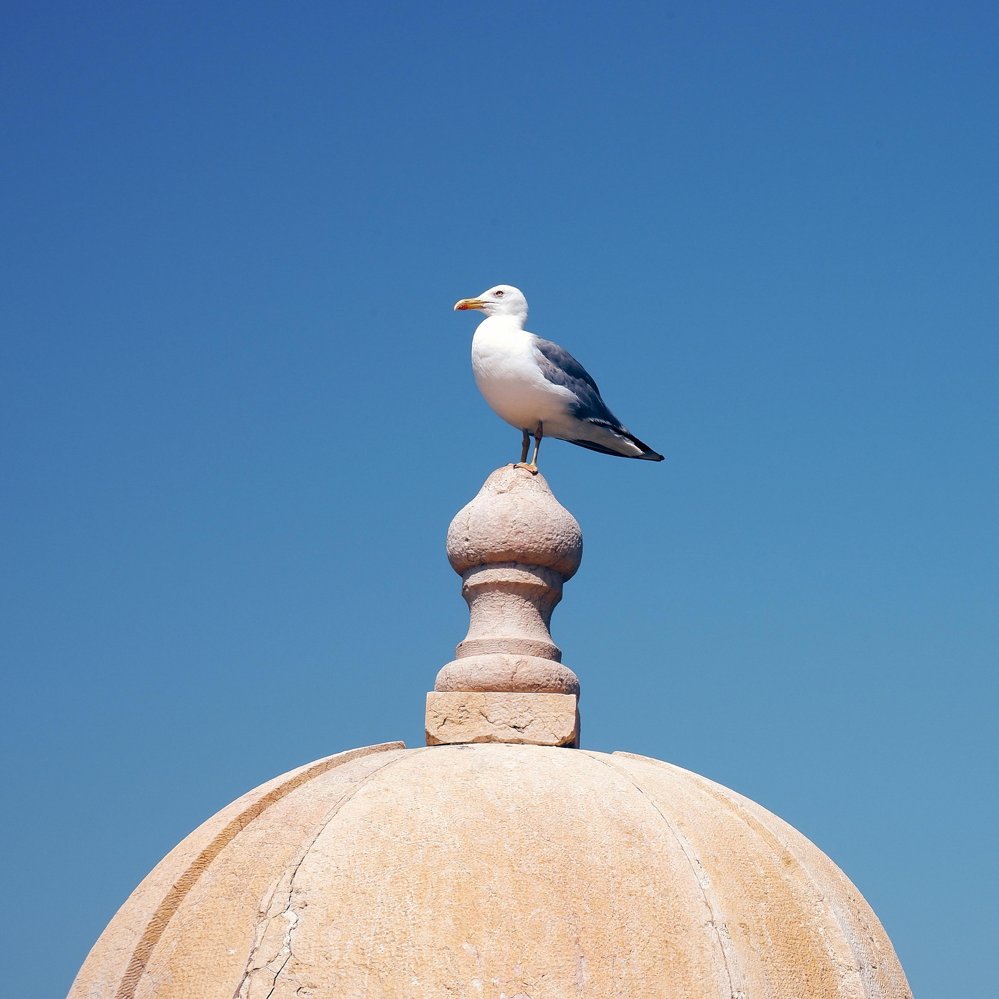
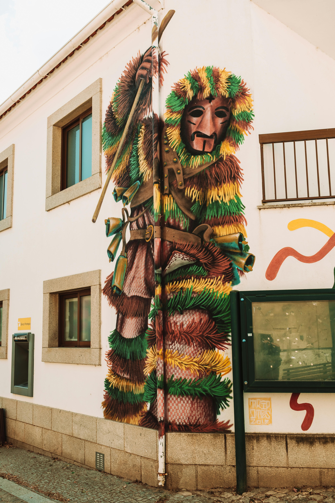
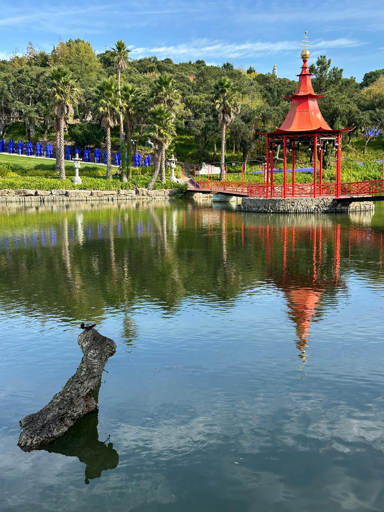

<!DOCTYPE html>
<html lang="uk">

<head>
    <meta charset="UTF-8">
    <meta name="viewport" content="width=device-width, initial-scale=1.0">
    <title>Portugalia</title>
    <link href="https://cdn.jsdelivr.net/npm/bootstrap@5.3.8/dist/css/bootstrap.min.css" rel="stylesheet"
        integrity="sha384-sRIl4kxILFvY47J16cr9ZwB07vP4J8+LH7qKQnuqkuIAvNWLzeN8tE5YBujZqJLB" crossorigin="anonymous">
    <link rel="stylesheet" href="style.css">
</head>

<body>
    <script src="https://cdn.jsdelivr.net/npm/bootstrap@5.3.8/dist/js/bootstrap.bundle.min.js"
        integrity="sha384-FKyoEForCGlyvwx9Hj09JcYn3nv7wiPVlz7YYwJrWVcXK/BmnVDxM+D2scQbITxI"
        crossorigin="anonymous"></script>
</body>

</html>


<div class="container  text-center">
    <div class="row">
        <div class="col-md-12">
            <h1>Португалія: країна, де оживає сонце.</h1>
            <p>Що таке португалія?</p>

        </div>
    </div>


    <div class="row">
        <div class="col-md-6">
            
        </div>
        <div class="col-md-6">
            <p> (офіційно — Португальська Республіка) — це держава на південному заході Європи, яка розташована у
                західній
                частині Піренейського півострова та є найзахіднішою країною континентальної Європи</p>
            <p>Спокій та неспішність</p>
            <p> Португальці живуть у стилі «devagar» (повільно). Вони не люблять поспіху, стресу та цінують відпочинок.
            </p>
        </div>
    </div>

    <div class="container">
        <div class="row">
            <div class="col-md-12">
                <p>Культ сім'ї:</p>
            </div>

        </div>

<div class="row">
    <div class="col-md-12">
         <p> Родина є головною цінністю. Вихідні дні зазвичай присвячують великим застіллям із родичами.</p>

    </div>
</div>
       
        <div class="col-md-6">
            <div class="row"> 
            </div>
        </div>
    </div>


    <div class="container">

        <div class="col-md-6">
            <div class="row">
                <p> Ключове поняття португальської душі. Це специфічна, світла меланхолія, туга за домом, минулим або за
                    чимось
                    втраченим. Португальці люблять легкий сум.</p>
            </div>
        </div>
        <div class="col-md-6">
            <div class="row"> </div>
        </div>


    </div>